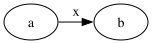
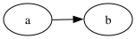

2026-06-16. digraph{{rank=same a b} a->b[label="x"]}:
dot emits 3 <text> (a, b, and the edge label x at
lp="72,29.25"); graphviz-ts emits 2 — the label is dropped. This case
is deferred: it cannot be fixed inside make_flat_labeled_edge
alone, because the label virtual node it depends on is never created.
The drawings below are the actual rendered SVGs.


Root cause — the flat label virtual node is never created.
make_flat_labeled_edge (dotsplines.c:1314) reaches the label
node ln by walking the edge's ED_to_virt chain and reads
ED_label(e)->pos = ND_coord(ln). That node is built in C by
lib/dotgen/flat.c:flat_node (make_vn_slot(g, r-1, place) — it
places the label vnode on the rank above the flat edge), driven by the
flat_edges preprocessing (flat.c:~295-330) during the
ranking/mincross phase. When a flat labeled edge sits at rank 0,
abomination() (flat.c:187) inserts an entire new rank
to make room.
The TS port has none of this: after layout the graph has 2 nodes (both rank 0),
ED_label.set=false, pos=(0,0). So
make_flat_labeled_edge would have no ln to read.
The mission brief scoped T1's write-set to splines-flat.ts only, on the
assumption the vnode either already exists or could be created from there. It cannot —
creation is ranking-phase (flat.ts / mincross / position),
and abomination's rank insertion is golden-blast-radius. A faithful G4
therefore needs its own mission that ports flat_node + abomination
+ the flat_edges driver, then dispatches make_flat_labeled_edge
from make_flat_edge. The G1 work (T2/T3 — opposing / labeled-parallel regular
edges) is independent and proceeds in this mission.